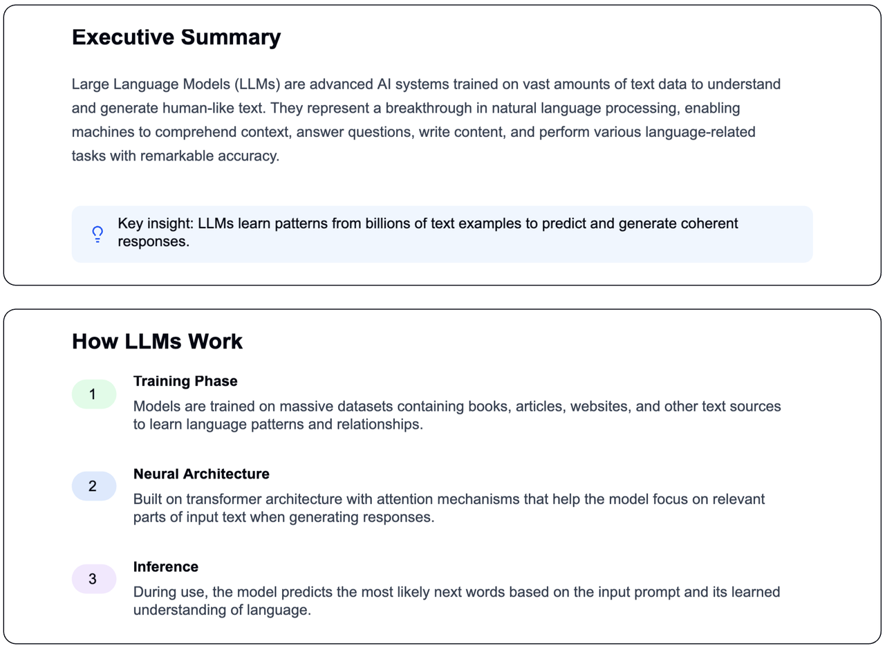
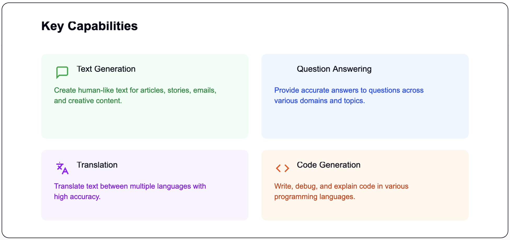
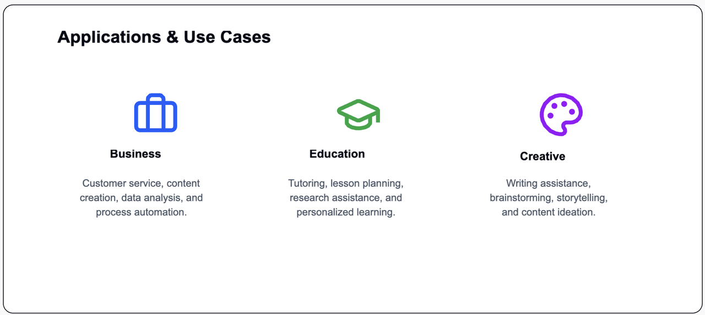

The Evolution of Large Language Models: From Turing's Vision to the Reality of ChatGPT

A 70-Year Journey: From the Turing Test to Contemporary AI
The journey to develop machines that genuinely grasp human language began in the 1950s with Alan Turing’s introduction of his renowned test for machine intelligence. This monumental challenge posed the question: how can we teach computers to understand the intricacies and nuances of human language?
Language transcends mere words; it is a complex system enriched with grammar rules, cultural contexts, implied meanings, and creative expression. Imagine attempting to convey sarcasm, poetry, or humor to someone unfamiliar with human emotions. This was the challenge engineers confronted while designing machines capable of understanding language.
Three Stages of Evolution in Language AI
Stage 1: Statistical Language Models (1990s-2010s)
Early language models functioned like advanced autocomplete systems, relying on statistical patterns to predict subsequent words. For instance, if you entered "The weather is," the system would analyze millions of examples to suggest words like "nice," "cold," or "sunny" based on observed frequency patterns.
Limitations: While these models could complete sentences, they lacked true comprehension of meaning or context beyond a few words.
Stage 2: Neural Language Models (2010s)
The advent of neural networks transformed language processing, allowing models to grasp context and word relationships. For example, unlike statistical models, neural networks could discern that "bank" has different meanings in "river bank" and "savings bank" by evaluating the surrounding context.
Breakthrough: Models like BERT (2018) significantly improved language comprehension by enabling them to read entire sentences and understand the interconnections between words.
Stage 3: Large Language Models - The Current Revolution (2020s-Present)
A remarkable breakthrough emerged when researchers discovered that enlarging language models significantly enhanced their performance and granted them new capabilities.
The Importance of Scale: Discovering the Impact of Size
Researchers identified that when language models exceeded specific size thresholds—transitioning from millions to hundreds of billions of parameters—extraordinary advancements occurred. These models not only excelled in existing tasks but also developed entirely new abilities.
Consider it this way: imagine learning to play the piano, and upon reaching a certain level, you suddenly find yourself able to compose symphonies without formal training in composition.
What Defines a "Large" Language Model?
Modern Large Language Models are characterized by:
- Hundreds of billions of parameters, in contrast to older models with millions.
- Training on extensive text datasets sourced from the internet.
- Transformer architecture that enables the processing and understanding of relationships between words over lengthy passages.
For instance, GPT-3 boasts 175 billion parameters—imagine a brain with 175 billion adjustable connections, each fine-tuned through exposure to a vast array of human-written knowledge.
Emergent Abilities: Unforeseen Capabilities
One of the most astonishing features is "in-context learning," which allows models to acquire new tasks simply by observing examples within a conversation.
Example:
If you present the model with: "Dog -> Animal, Rose -> Flower, Oak -> ?”
It can respond with: "Tree"
This demonstrates its ability to recognize patterns (specific items to their categories) from the examples provided.
Additional Emergent Abilities:
- Complex reasoning: Solving intricate multi-step math problems.
- Creative writing: Producing poetry, stories, and scripts.
- Code generation: Writing functional computer programs.
- Language translation: Converting text between languages even if not specifically trained for those translations.
Summary:
Language models create and produce text by predicting the likelihood of a word or series of words appearing within a larger context. This capability is particularly beneficial for tasks such as text generation and translation.
Large language models (LLMs) are sophisticated models that utilize extensive parameters and large datasets, allowing them to handle longer text sequences and execute complex functions like summarization and answering questions.
Transformers serve as a fundamental architecture in LLMs, employing attention mechanisms to prioritize significant parts of the input, which improves processing efficiency.
LLMs offer a wide range of applications, including text generation, translation, sentiment analysis, and code generation. However, they also raise important considerations regarding costs, biases, and ethical implications.
Citation: Zhao, Wayne Xin, et al. "A Survey of Large Language Models." arXiv preprint arXiv:2303.18223 (2023). arXiv: https://arxiv.org/abs/2303.18223